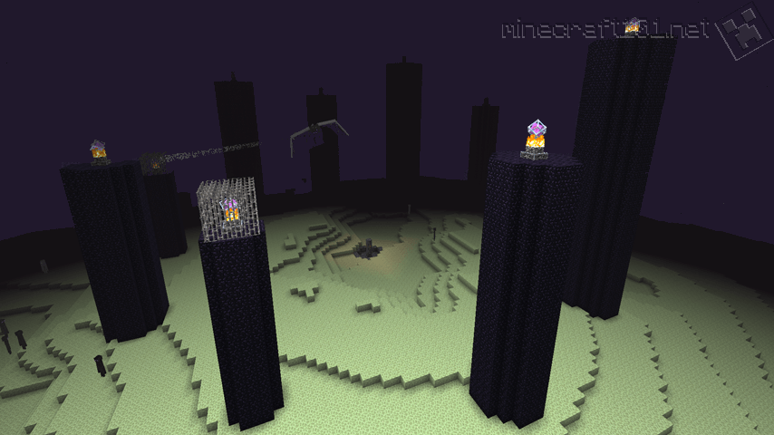

The End
The end is a new dimension accessed with the end portal in a structure called a stronghold. It signals the 'last battle' of the game.
End Cities
After defeating the ender dragon and going into the portal, you can find abandoned cities made of purple and light bricks.
They contain chests with loot that can only be attainable in the overowrld. Someone had to have put these items in the end. Who resealed the portal? Who built the cities?
There are also other dragon heads on the front of floating ship-like structures near the cities, insinuating other end dragons. Are all worlds connected? what is the explanaion for this?
Endermen
Endermen are tall, slender, humanoid creatures that dislike eye contact and can teleport. Some poeple think that these creatures could be evolved versions of humans.
With no food in the end besides chorus fruit, a fruit that causes you to teleport, some poeple think prolonged eating this with no access back to the overworld could cause mutations like those we see in endermen. They dislike looking at humans, and if someone sealed the end portal (that the player needs to reopen to enter the end), then this would be the only edible resource they had.
Shulker Boxes
Shulker boxes are small sentient boxes that open and attack people who venture into the end cities. Are they protectors? Are they another mutation? They know to attack humans, but where did they learn this from?